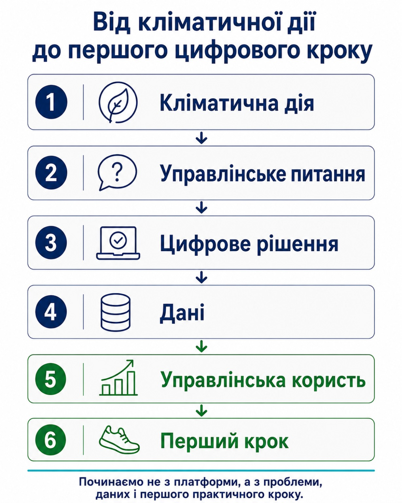
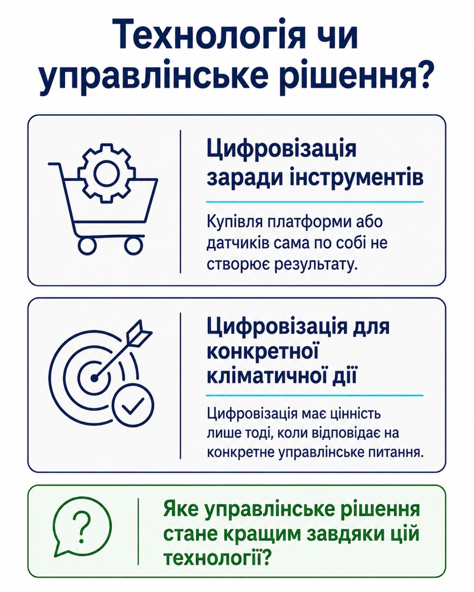
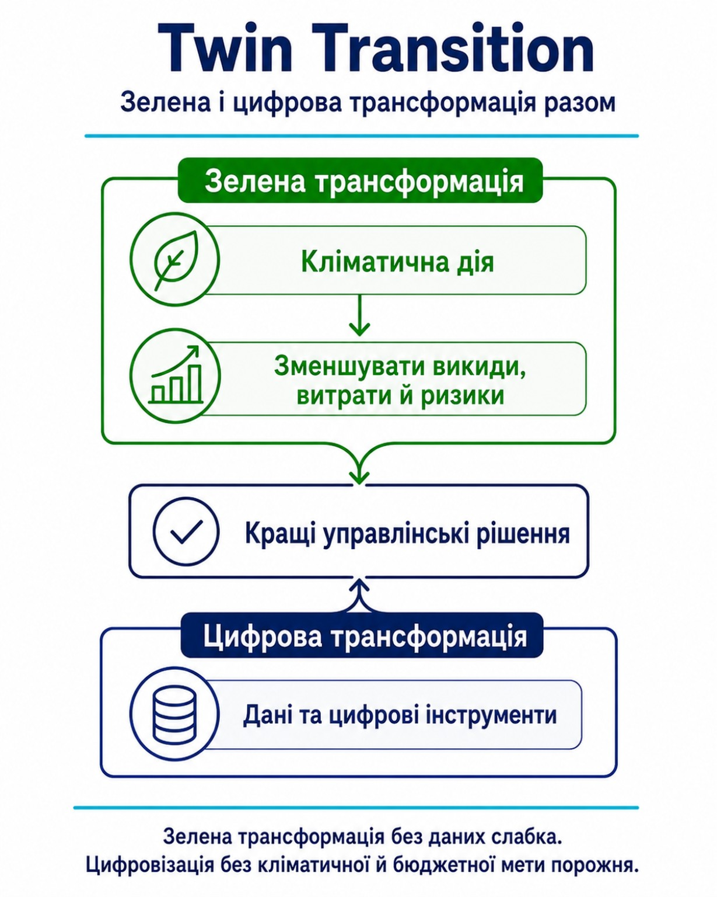

Роль технологій та цифровізації у міських кліматичних діях
Дані, цифровізація та управління на основі фактів
Мета заняття
Допомогти міському голові та управлінській команді перейти від цифровізації заради інструментів до цифровізації для конкретної кліматичної дії: визначити управлінське питання, потрібні дані, цифрове рішення, очікувану користь і перший практичний крок.
Навіщо Вам це заняття
У Занятті 01 громада визначила головний кліматичний виклик. У Занятті 02 вона сформувала першу кліматично нейтральну візію громади. Тепер виникає практичне питання: яке конкретне управлінське рішення потрібно покращити і як дані та цифрові інструменти можуть підтримати цю кліматичну дію?
Команда може мати сильну візію, але не бачити, що саме потрібно цифровізувати. Купівля платформи або датчиків сама по собі не створює результату. Спочатку потрібно визначити кліматичну дію, управлінське питання, потрібні дані, відповідального та рішення, яке має стати кращим.
Після цього заняття Ви зможете:
- пояснювати, чому дані є управлінським ресурсом громади;
- відрізняти цифровізацію заради технологій від цифровізації для ухвалення рішень;
- пояснювати Twin Transition — подвійний зелений і цифровий перехід;
- обирати одну кліматичну дію, якій потрібна цифрова підтримка;
- визначати потрібні дані, їхнє джерело, відповідального та управлінську користь;
- створювати Карту цифрового рішення для кліматичної дії з першим кроком і 2–3 показниками результату.
Практичний результат
Карта цифрового рішення для кліматичної дії — короткий документ, який пов’язує кліматичний виклик із Заняття 01, кліматично нейтральну візію із Заняття 02, конкретну дію громади, потрібні дані, цифровий інструмент, управлінську користь, перший крок і 2–3 показники результату.

Карта заняття
| № | Блок | Активність |
|---|---|---|
| 1 | Навіщо Вам це заняття | Побачити, як Заняття 03 продовжує виклик і візію з попередніх занять. |
| 2 | Дані як управлінський ресурс | Відрізнити загальні враження від даних, що підтримують рішення. |
| 3 | Smart City без гаджетизації | Перевірити, чи технологія справді покращує управління. |
| 4 | Twin Transition | Поєднати зелену та цифрову трансформацію в одній управлінській логіці. |
| 5 | Від кліматичної дії до цифрового рішення | Визначити потрібні дані, управлінську користь і перший крок. |
| 6 | Практичне завдання | Створити Карту цифрового рішення для Портфеля мера. |
| 7 | Тест і рефлексія | Перевірити логіку рішення та підготувати розмову з командою. |
Дані як новий управлінський ресурс громади
Дані — це не лише таблиці, звіти або файли в комп’ютері. Для міського голови дані — це спосіб бачити реальний стан громади і не покладатися тільки на враження, скарги або політичну видимість проблеми.
Наприклад, громада може знати, що “школи споживають багато тепла”. Але це ще не управлінські дані. Управлінські дані починаються тоді, коли команда може відповісти: які саме школи споживають найбільше, скільки це коштує бюджету, чи є аномалії, хто відповідає за дані, як часто вони оновлюються і яке рішення ухвалюється на їхній основі.
| Загальне враження | Управлінські дані |
|---|---|
| У нас великі витрати на енергію. | Які 10 будівель створюють найбільшу частку витрат на тепло або електроенергію? |
| У нас проблемний транспорт. | Які райони не мають зручного маршруту до лікарні, школи або ЦНАП? |
| Потрібно більше озеленення. | Які громадські простори перегріваються, де бракує тіні і хто найбільше вразливий? |
| Треба модернізувати комунальне підприємство. | Які втрати зростають, як часто вони вимірюються і хто відповідає за реагування? |
Smart City — це не гаджети, а модель управління
У Занятті 01 Smart City було визначено не як набір технологій, а як спосіб ухвалювати кращі управлінські рішення. У цьому занятті робимо наступний крок: цифровізація має цінність лише тоді, коли відповідає на конкретне управлінське питання.
| Цифровий інструмент | Коли він має управлінську цінність |
|---|---|
| Система енергомоніторингу | Коли команда аналізує відхилення і діє, а не лише збирає показники. |
| GPS на комунальній техніці | Коли дані допомагають оптимізувати маршрути, витрати пального і якість послуг. |
| Портал відкритих даних | Коли дані оновлюються, зрозумілі користувачам і підтримують прозорість. |
| Цифрова карта зелених насаджень | Коли вона впливає на планування тіні, догляду, маршрутів і громадських просторів. |
| Управлінський дашборд | Коли мер і команда регулярно використовують його для аналізу, реагування та перевірки результату. |

Twin Transition — зелена і цифрова трансформація разом
Twin Transition означає подвійний перехід: зелений і цифровий. Для громади це дуже практична логіка: кліматичні рішення мають спиратися на дані, а цифровізація має допомагати зменшувати викиди, витрати й ризики.

| Приклад | Зелена частина | Цифрова частина |
|---|---|---|
| Зменшення витрат на енергію | Термомодернізація, ефективне теплопостачання, ВДЕ, енергозбереження. | Енергомоніторинг, облік, порівняння будівель, виявлення аномалій і 2–3 показники результату. |
| Покращення мобільності | Громадський транспорт, пішохідні маршрути, велоінфраструктура, менша залежність від приватного авто. | Дані про маршрути, GPS, пасажиропотоки, карта доступності, аналіз скарг і показники регулярності. |
Від кліматичної дії до цифрового рішення
Цифрове рішення починається не з назви платформи. Воно починається з конкретної кліматичної дії та управлінського питання. Спочатку команда визначає, що потрібно покращити: зменшити втрати енергії, швидше реагувати на підтоплення, оптимізувати маршрути або краще планувати зелені зони. Лише після цього обираються дані й цифровий інструмент.
Кліматична дія та дані для цифрового рішення
| Кліматична дія / сфера | Які дані можуть підтримати цифрове рішення |
|---|---|
| Енергія | Які муніципальні будівлі споживають найбільше тепла й електроенергії; де є облік; де є аномалії; де найбільший потенціал економії. |
| Будівлі | Перелік об’єктів, площа, технічний стан, наявність енергоаудиту, кількість користувачів, соціальна важливість і витрати на утримання. |
| Транспорт і мобільність | Основні маршрути мешканців, доступність громадського транспорту, стан зупинок, маршрути до шкіл, лікарень і ЦНАП, витрати пального. |
| Вода, підтоплення і ризики | Де виникають підтоплення, які об’єкти під ризиком, де є проблеми з водовідведенням, які райони перегріваються, де бракує тіні. |
| Відходи й ресурси | Обсяги побутових, органічних і будівельних відходів, маршрути вивезення, витрати, можливості повторного використання та партнерства. |
| Фінанси і проєкти | Які витрати зростають, які проєкти мають базові дані, попередню вартість, відповідального і потенціал для фінансування. |
Як визначити управлінську цінність цифрового рішення
Цифрове рішення має управлінську цінність, коли допомагає бачити проблему, порівнювати варіанти, вчасно реагувати або перевіряти результат. Для міського голови важливе не саме програмне забезпечення, а те, яке рішення стане швидшим, точнішим, прозорішим або економнішим.
Сильне цифрове рішення має чіткий зв’язок: кліматична дія → управлінське питання → потрібні дані → цифровий інструмент → управлінська користь. Якщо цей зв’язок не можна пояснити одним реченням, рішення ще потребує уточнення.
Дані, відповідальність і 2–3 показники результату
Дані та відповідальність до запуску
До запуску потрібно визначити мінімальний набір даних, їхнє джерело, якість, періодичність оновлення та відповідального. Не потрібно чекати ідеальної системи. Важливо чесно позначити: дані вже є, вони розрізнені або їх ще потрібно почати збирати.
2–3 показники для перевірки результату
У цьому занятті громада не створює повну систему KPI. Для одного цифрового рішення достатньо визначити 2–3 показники, які допоможуть перевірити, чи рішення працює. Повний набір KPI та адаптивний цикл управління створюватимуться в окремому наступному занятті курсу.
| Цифрове рішення | Можливі 2–3 показники результату |
|---|---|
| Енергомоніторинг будівель | Зміна споживання енергії; кількість виявлених аномалій; частка об’єктів із регулярними даними. |
| Цифрова карта підтоплень | Кількість підтверджених ризикових точок; час реагування; кількість пріоритетних заходів, внесених до плану. |
| GPS-моніторинг комунального транспорту | Зміна витрат пального; регулярність маршрутів; кількість відхилень, на які команда відреагувала. |
| Карта зелених насаджень | Частка об’єктів із актуальними даними; кількість зон перегріву, врахованих у плануванні; виконані заходи з догляду. |
| Цифровий облік відходів | Частка потоків із підтвердженими даними; зміна обсягів змішаних відходів; кількість управлінських рішень на основі даних. |
| Управлінський дашборд | Регулярність оновлення; кількість показників із відповідальним; кількість рішень, зафіксованих після перегляду даних. |
Що потрібно визначити у карті
| Поле карти | Що потрібно визначити |
|---|---|
| Кліматична дія | Яку конкретну зміну або проблему громада хоче підтримати. |
| Управлінське питання | Яке рішення має стати швидшим, точнішим, прозорішим або економнішим. |
| Цифрове рішення | Який інструмент, реєстр, карта, моніторинг або інший цифровий підхід може допомогти. |
| Потрібні дані | Які дані потрібні для роботи рішення. |
| Джерело і відповідальний | Звідки беруться дані, хто їх оновлює і хто реагує. |
| Управлінська користь | Що саме команда зможе бачити, порівнювати, планувати або змінювати. |
| Перший крок | Що можна зробити протягом найближчого місяця без великої закупівлі. |
| 2–3 показники | Як команда перевірить, що цифрове рішення справді допомагає. |
Технологія чи управлінське рішення?
Оберіть одну кліматичну дію громади та один можливий цифровий інструмент: енергомоніторинг, цифрову карту, GPS-моніторинг, реєстр, датчики або управлінський дашборд.
Перевірте рішення за шістьма питаннями:
Створіть Карту цифрового рішення для кліматичної дії
Мета завдання — описати одне цифрове рішення, яке може підтримати конкретну кліматичну дію громади. Це не технічне завдання на закупівлю і не повна цифрова стратегія. Це коротка управлінська карта для розмови з командою.
Візьміть документи з попередніх занять
- Картку кліматичного виклику з Заняття 01;
- Картку кліматично нейтральної візії громади з Заняття 02.
Оберіть одну кліматичну дію та управлінське питання
Оберіть одну дію, найбільш пов’язану з вашим викликом і візією: зменшення споживання енергії, реагування на підтоплення, покращення мобільності, управління зеленими зонами, водою, відходами або інша підтверджена потреба громади. Сформулюйте, яке рішення має стати кращим.
Опишіть одне цифрове рішення
- підтримує одну конкретну кліматичну дію;
- відповідає на одне зрозуміле управлінське питання;
- використовує дані, які вже є або які реально почати збирати;
- має визначеного власника даних і відповідального за реагування;
- дає зрозумілу управлінську користь;
- може початися з одного реалістичного першого кроку.
Заповніть Карту цифрового рішення
На наступній сторінці внесіть відповіді до робочої форми.
Додайте 2–3 показники та позначте якість даних
Не створюйте повну систему KPI. Оберіть лише показники, які допоможуть перевірити роботу одного рішення.
Критерії успішного виконання
- використано Картку кліматичного виклику та Картку кліматично нейтральної візії громади;
- обрано одну конкретну кліматичну дію;
- описано одне цифрове рішення та управлінське питання, яке воно підтримує;
- визначено потрібні дані, джерело, відповідального та управлінську користь;
- сформульовано перший реалістичний крок;
- додано 2–3 показники результату та позначено прогалини в даних.
Карта цифрового рішення для кліматичної дії
Карта цифрового рішення для кліматичної дії
Форма зберігається лише у Вашому браузері. Дані не передаються назовні. Використайте кнопку «Друк / PDF», щоб зберегти заповнену карту.
Підсумковий тест заняття
Оберіть одну правильну відповідь у кожному питанні. Тест допоможе перевірити розуміння теми; кількість спроб не обмежена.
Рефлексія та наступний крок
Рефлексія
- Яке рішення громади сьогодні ухвалюється більше інтуїтивно, ніж на основі даних?
- Яку кліматичну дію можна підсилити цифровим інструментом?
- Які дані для цього вже є, а яких бракує?
- Хто має бути власником даних і відповідальним за реагування?
- Який перший крок можна зробити протягом найближчого місяця?
Логічний перехід до наступного заняття
У цьому занятті громада створила Карту цифрового рішення для кліматичної дії. Тепер команда може пояснити, яку проблему вирішує інструмент, які дані потрібні, яку управлінську користь він дає і з чого почати.
Наступний крок — подивитися ширше: які глобальні тренди, міжнародні кейси та практики Climate Mission Cities можуть допомогти громаді не вигадувати все з нуля.
У Занятті 04 учасники перейдуть до теми глобальних кейсів і Climate Mission Cities.
Що варто зробити вже завтра
Проведіть коротку робочу зустріч із підрозділом, який відповідає за обрану кліматичну дію, та командою цифровізації. Поставте одне питання: яке конкретне рішення має стати кращим завдяки даним і цифровому інструменту?
Після зустрічі заповніть першу версію Карти цифрового рішення для кліматичної дії.
Заняття 03 завершено.